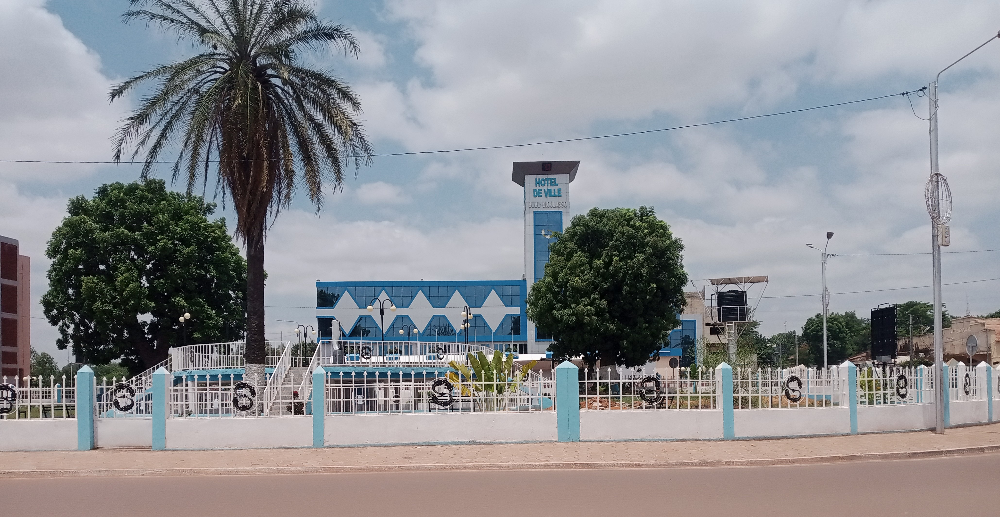

Découverte de Bobo-Dioulasso
Bobo-Dioulasso est une ville fascinante et vibrante, considérée comme la capitale économique du Burkina Faso. Connue pour son patrimoine exceptionnel et son ambiance chaleureuse, elle vous invite à explorer une culture authentique et dynamique.
- 🕌 Mosquée de Dioulassoba (1880)
- 👸 Mausolée de la Princesse Guimbi Ouattara
- 🛠️ Quartier des artisans : forge, teinturerie, sculpture
- 🌄 Musée Sogossira Sanou & Mare aux Hippopotames
- 🎉 Semaine Nationale de la Culture (SNC)
